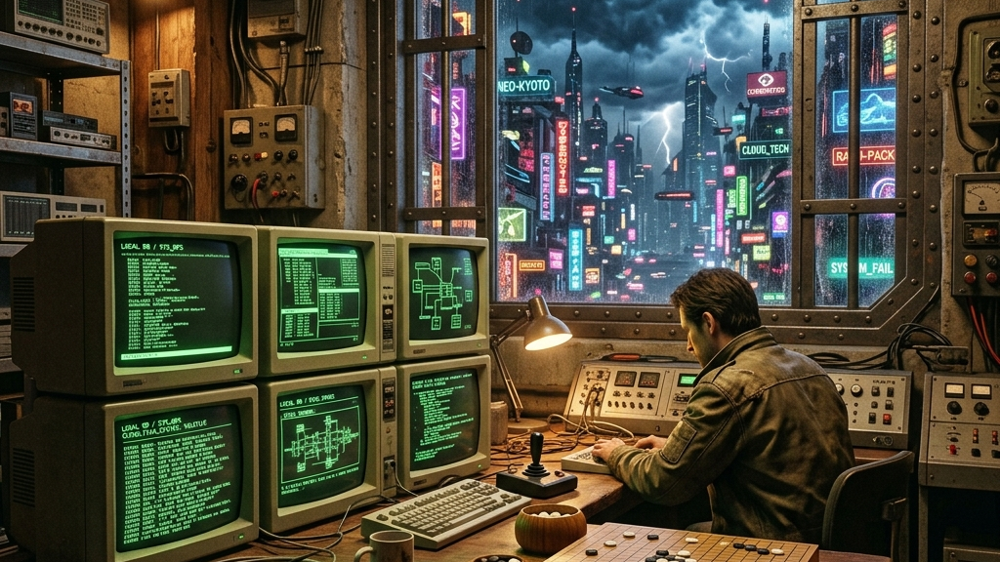

Fortaleza Digital: Como a Cara Core Protege o Seu Negócio Contra o Exagero do Mercado de IA
Quem acompanha as notícias de tecnologia hoje se depara com um volume assustador de promessas. Bilhões de dólares são investidos com a expectativa de que robôs inteligentes resolvam todos os problemas das empresas em segundos.
No entanto, debaixo de toda essa propaganda, existe um descompasso. O dinheiro dos investidores se move rápido, mas o tempo necessário para criar um sistema seguro e conquistar a confiança de um cliente é lento. O desenvolvimento de software é como construir uma casa: exige base forte, planejamento e tempo para assentar a estrutura.
- O Dinheiro Circular — A troca de bilhões entre as gigantes de tecnologia
- A Barreira do Tempo — Por que as empresas tradicionais demoram a adotar IA
- A Fortaleza Digital — Sistemas locais que funcionam mesmo sem internet
- Construir com Calma — O nosso modelo de negócios simples e sustentável
- A IA na Prática — Como usamos a tecnologia para programar melhor
O Problema: O dinheiro que apenas troca de bolso
Hoje, as grandes empresas de tecnologia criaram um ciclo que se autoalimenta. O Google compra chips da Nvidia. A Nvidia usa o Google Cloud. A Microsoft investe na OpenAI, que por sua vez gasta bilhões no Azure da Microsoft.
Essa circulação de dinheiro faz com que as empresas pareçam crescer rápido. O problema é que essa riqueza continua presa dentro da própria indústria de tecnologia. Para que essa conta feche no longo prazo, o valor precisa chegar à economia real: nas lojas, nas indústrias, nos condomínios e nos pequenos escritórios.
E é aí que o exagero do mercado esbarra na realidade prática do dia a dia.
A Causa: Empresas tradicionais precisam de segurança, não de moda
As gigantes de tecnologia acreditam que o mercado vai substituir funcionários e sistemas por IA do dia para a noite. Mas o dono de um supermercado sabe que um erro no caixa no sábado à noite significa perder vendas e clientes. Uma clínica médica não vai trocar o prontuário dos pacientes só porque viu um vídeo bonito na internet.
Empresas reais têm leis a cumprir, dependem da segurança dos seus dados e precisam de sistemas estáveis. Mudar a rotina de trabalho das pessoas leva tempo. O software seguro não é feito em duas semanas ligando uma tela simples às APIs das Big Techs. Ele precisa ser resistente e seguro como uma marcenaria sob medida.
A Solução: Nossa fortaleza digital local
Em vez de forçar sua empresa a depender de conexões instáveis na nuvem e assinaturas caras que sobem de preço todo ano, a Cara Core aposta no controle do seu próprio destino. Nossos sistemas — como o CaraCore PDV, o Ink Agenda e o Reino OIDC — funcionam sob o conceito de fortaleza digital:
- Independência da Internet: O banco de dados e o processamento ficam no seu computador. Se a internet da sua operadora cair, sua empresa não para de vender.
- Dados Verdadeiramente Seus: Você tem o controle total das suas informações, sem precisar guardá-las em servidores de terceiros.
- Velocidade e Estabilidade: Usamos tecnologias que rodam direto no hardware do seu computador, garantindo respostas rápidas e sem travamentos.
Como a Cara Core se posiciona: Crescimento sustentável
Não corremos atrás de rodadas de investimento para inflar nosso valor. A Cara Core aposta na paciência e no crescimento orgânico. Criamos um modelo de teste gratuito muito simples:
Se o seu negócio é pequeno e faz menos de 100 vendas por mês, você pode usar nosso sistema de graça. O custo de rodar o programa é do próprio computador do cliente, então não precisamos gastar com servidores caros na nuvem. Esse usuário nos ajuda testando o software no mundo real e indicando para amigos. Quando a empresa dele cresce e passa das 100 vendas, a mudança para o plano pago acontece naturalmente, porque ele já confia na estabilidade do sistema.
A IA como nossa ferramenta de trabalho
Embora sejamos céticos com as promessas exageradas da IA para o usuário final, nós a usamos diariamente de forma produtiva no desenvolvimento. A IA funciona como um assistente de engenharia eficiente: ela escreve códigos repetitivos, ajuda a encontrar erros ocultos em segundos e acelera a criação de testes.
Isso permite que uma equipe pequena e focada entregue sistemas tão robustos e seguros quanto os desenvolvidos por equipes corporativas imensas, sem repassar custos extras para você.
Conclusão
Enquanto o mercado de tecnologia briga por modismos na nuvem, nós continuamos criando ferramentas locais para quem precisa faturar e gerenciar sua rotina com segurança hoje. Não vendemos promessas; entregamos estabilidade.
Quando a poeira baixar, quem construiu com calma vai continuar de pé.
Hashtags
Contato
- E-mail: suporte@caracore.com.br
- Site: www.caracore.com.br
- LinkedIn: Cara Core Informática
Conheça nossas ferramentas locais e recupere o controle da infraestrutura digital da sua empresa.
Visitar Site Oficial
Artigo publicado em 5 de janeiro de 2027
© 2027 Cara Core Informática. Todos os direitos reservados.